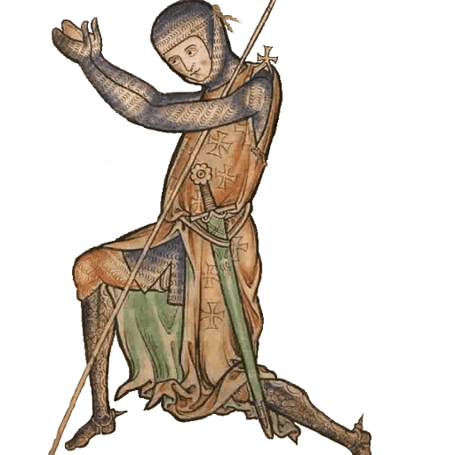
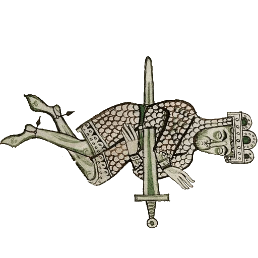
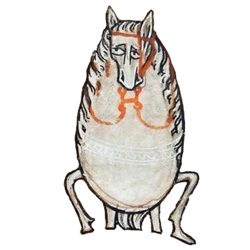
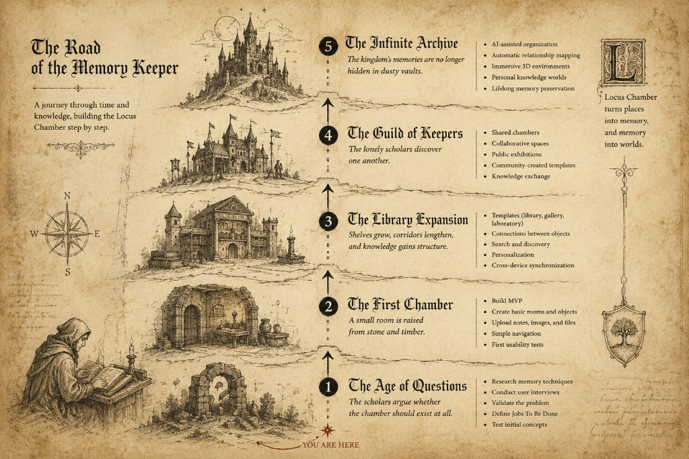
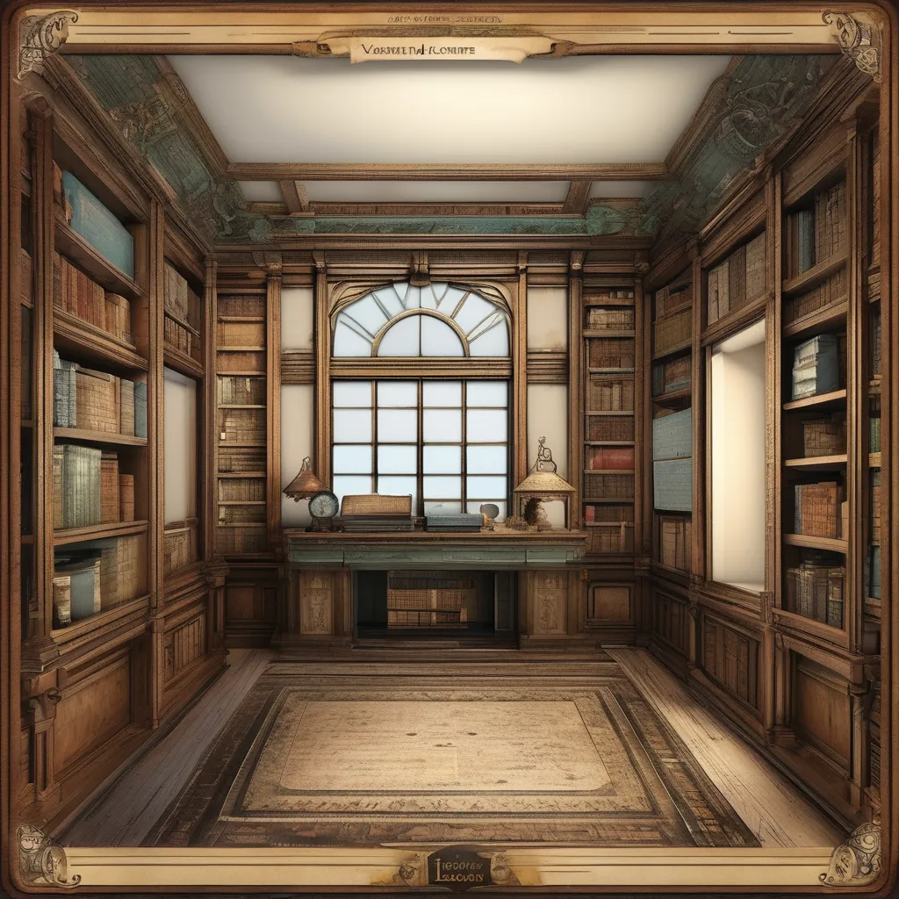
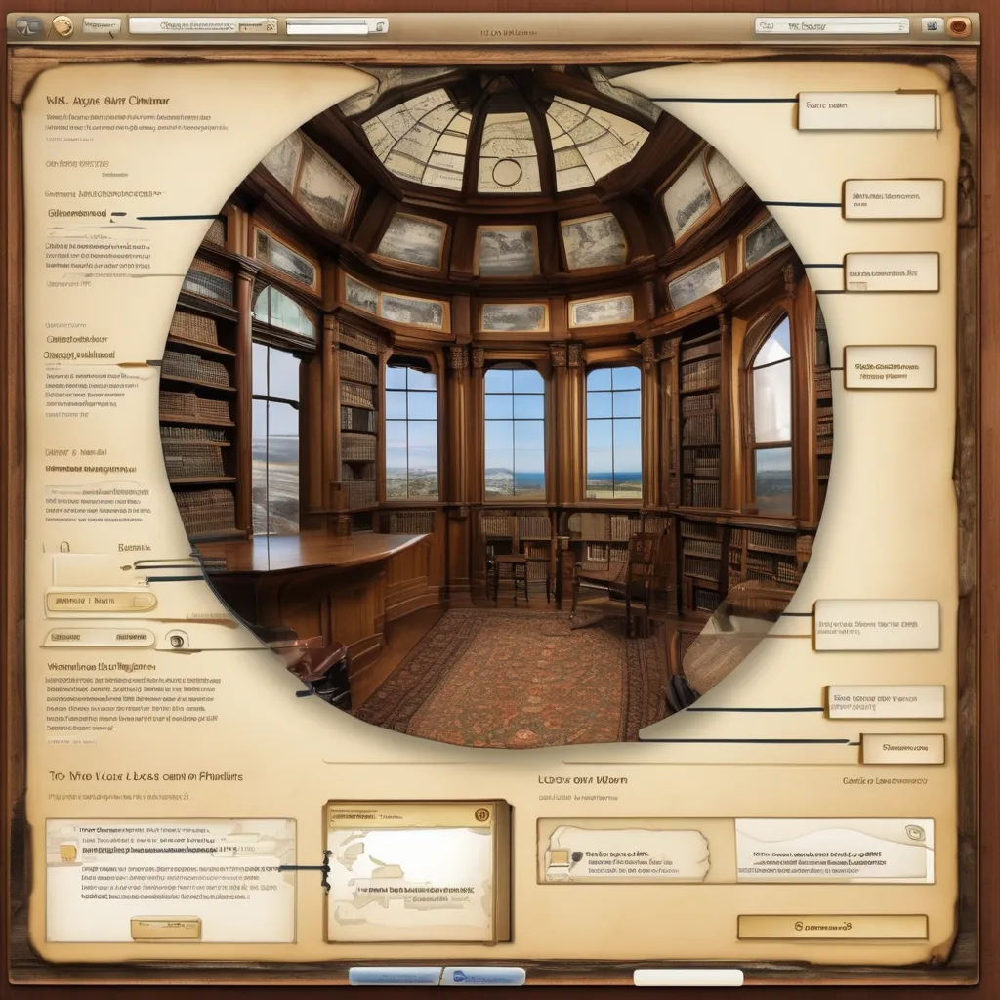
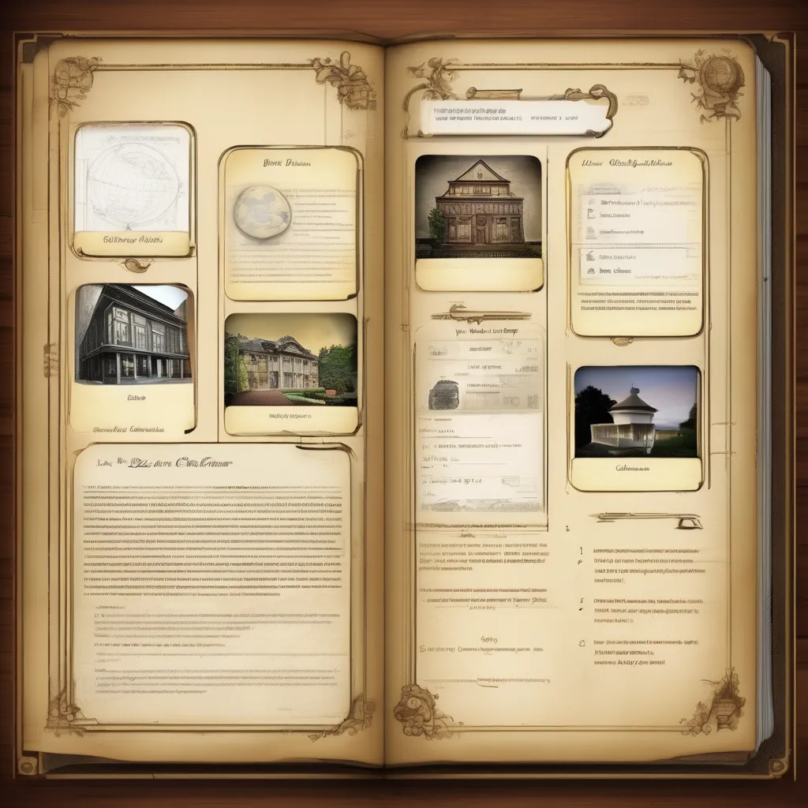
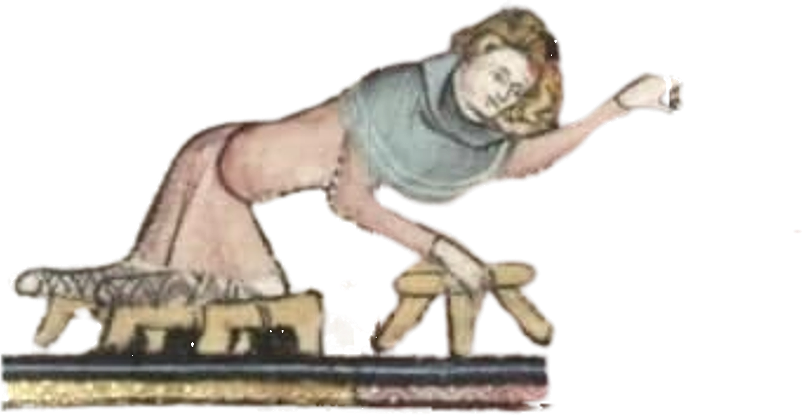
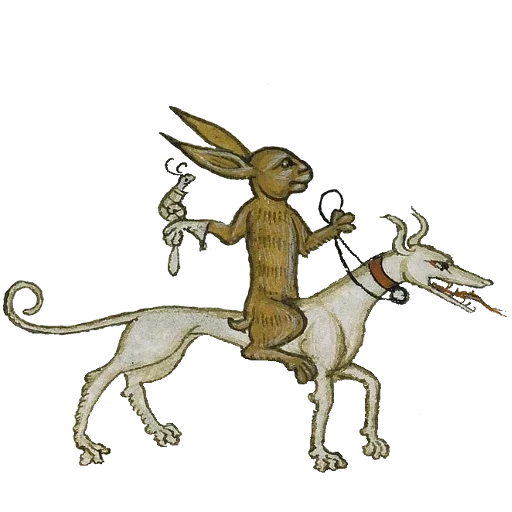
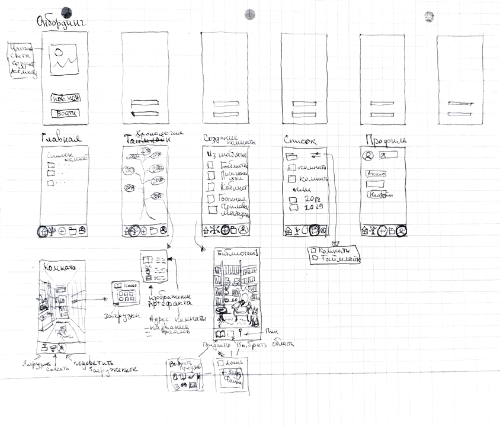

Discovery
A structured product thinking case — competitor review, hypothesis framing, and a validation plan. Built to show how I would approach discovery before building.
1. Discovery
Goal
Define what must be true for a visual memory space to beat folders and cloud storage — and what to test first.
Research Activities
Competitor analysis
Market map across cloud storage, local drives, specialized tools, and device libraries.
- Cloud storage (corporate segment): Yandex Disk, Google Drive, Mail.ru Cloud, iCloud — mature sharing workflows, but hard to audit quickly at scale.
- Local storage: SSD and hard drives.
- Specialized services: mindpalace.ai.
- Device-native storage: phone and camera libraries.
Strengths: integrated with other services, familiar UX, low setup effort, wide device access.
Weaknesses: slow retrieval, cluttered libraries, little meta-context, paid tiers for large volumes.
Hypothesis formation
Main hypothesis: users will engage with a visual, customizable storage system that surfaces memories and information in a personal, interactive way.
What would falsify the idea: users are satisfied with folders and the real pain is storage volume, not rediscovery or reuse.
Planned user interviews
8–10 one-on-one sessions with memory keepers and knowledge collectors — to test storage habits, emotional attachment, and reactions to a spatial approach.
Planned prototype validation
Guided walkthroughs with a clickable room: can users place artifacts, return after a week, and find what they saved faster than in a folder?

Working Hypotheses
Derived from competitor review and problem framing — to be confirmed or rejected in interviews and prototype tests.
- People accumulate more saved material than they ever revisit.
- Existing tools optimize for filing, not for coming back to what was saved.
- Users care about memories and meaning more than about file types.
- A spatial approach may attract interest, but only if setup and retrieval stay simple.

2. Product Thinking
Jobs To Be Done
Primary Job
Preserve knowledge and memories in a way that makes them easy to rediscover and reuse.
Functional Jobs
- Organize information.
- Find saved content quickly.
- Connect related ideas.
- Build a personal knowledge space.
Emotional Jobs
- Feel that important memories are not lost.
- Enjoy revisiting past experiences.
- Create a meaningful personal archive.

Personas
-
Researcher / Learner
When I'm exploring a new topic, I want to connect the materials I find so I can build a coherent understanding of the subject.
-
Creative
When I'm gathering inspiration for a project, I want to see ideas in context and space so I can discover new connections more easily.
-
Memory keeper
When important moments happen in my life, I want to preserve them in a form that evokes emotion and helps me relive those moments.
Roadmap

MVP
MVP Scope
Room Creation
- Create a room
- Choose a room template (library, study)
Artifact Placement
- Upload images
- Upload notes
- Place them in the room
Navigation
- Move around the room
- Zoom in on objects
Basic Associations
- Link object to object
- Add a description
Save & Return
- Save the room
- Return later
Main MVP hypothesis
Users find spatial organization more intuitive and memorable than traditional folders for personal knowledge and memories.



Risks
1. False Problem Risk
The most dangerous. Users like the idea, but are actually satisfied with Google Drive and Notion.
2. Novelty Risk
Users play with the room for the first 10 minutes, then lose interest.
3. Setup Effort Risk
Creating a room takes more effort than organizing files the usual way. If a user needs an hour to arrange objects, the product loses to folders — though for some, this becomes a new kind of play.
4. Retrieval Risk
Users enjoy placing information, but do not find it faster afterward.
5. Scalability Risk
Spatial organization works well for ~50 objects, but becomes unwieldy at 500–5,000.
6. Willingness To Pay Risk
Users find the product interesting, but are not ready to pay for it.
3. Insights
Problem reframe (working)
People rarely struggle with storing files, but often struggle with reusing saved information — so the product should optimize for rediscovery, not storage.

4. Next Steps
- Run 8–10 interviews: is reuse — not storage — the real unmet job?
- Prototype test: time-to-find vs. a folder baseline after 7 days.
- Pricing smoke test: would memory keepers pay for a persistent room and templates?

Evolution
Discovery defines the first room. Evolution describes how Locus Chamber matures beyond MVP — business model, product layers, and visual direction. For roadmap and MVP scope, see .
1. Monetization
Model
Core model
Freemium + subscription
A free account with a limited number of rooms and objects. A premium subscription for expanded storage and additional capabilities.
Additional revenue options
- Purchasing extra spaces — rooms, worlds, and visual themes.
- AI features for automatic memory organization.
- Family spaces for shared use.
- Lifetime license for early adopters.
Free vs Paid
| Free | Paid |
|---|---|
| 1–3 rooms | Unlimited rooms |
| Limited storage | Expanded storage |
| Basic categories | Advanced categories |
| Manual object placement | AI organization |
| Basic search | Semantic search |
| Standard themes | Premium themes |
Validation plan
| Stage | Goal | Method | Metric |
|---|---|---|---|
| Stage 1 Interest check | Understand whether the idea creates an emotional response. |
|
20% of visitors leave their email. |
| Stage 2 Value check | Find out whether people would use the product regularly. |
|
50% of testers want to return to the product. |
| Stage 3 Monetization check | Test willingness to pay. |
|
5–10% of users click the purchase button. Some users request paid access. |
2. Product evolution
- Shared archives — family rooms and co-created memory spaces.
- Template worlds — ready-made rooms and themes beyond the MVP library/study set.
- Rediscovery at scale — semantic search and links across rooms when object count grows.
- Cross-room memory graph — connect people, places, and artifacts across spaces.
- Export & permanence — backup, export, and long-term archive guarantees for paid users.
3. Visual evolution
From hand-drawn concepts to mobile app screens in Figma — UI maturity alongside product maturity.
Hand-drawn concepts
Early room layouts, object placement, and game-style file UI — sketched before high-fidelity design.

Figma mobile screens
Click-through demo of the full mobile flow — login, chambers, memory garden, chronology, room creation, living room, archive, and profile.